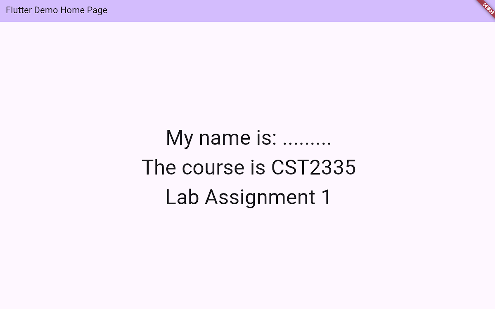

Lab 1
This week, you have had a quick introduction to Flutter, and started programming in Dart. You have learned how to declare variables,
declare a function, and how a program starts and runs.
For the labs in this course, you will create your own Flutter project called "my_CST2335_labs". You will do all of your work this semester in this one project.
The professor will post code examples in another project, but you should do all of your work in your my_CST2335_labs project. Once you create your new project, use AI to remove all the default comments that are generated.
For week 1, demonstrate your understanding of the following items (7 marks) :
- Declare a private class called _MyStudentInfo, which extends StatelessWidget (since your name, student number, and course code will not change).
You will have to write the build() function which will render how this class is represented on screen. This function should return a Column( ),
whose children:[ ] are Text( ) widgets:
[ Your name & student number, The course code, The lab assignement number.].
You can look at the Column( ) and Text( ) widgets that are already in the code as an example of what to do. (2 marks)
- Replace the home: parameter of the MaterialApp( ) constructor in MyApp so that it returns a const _MyStudentInfo() object. 1 mark
- Declare another variable called myFontSize and have it initialized to 30.0. Modify your Text widgets so that you also pass in a style: parameter set to your variable.(1 mark)
- Show that you can launch the program on the Android emulator, and a web browser (Edge or Chrome). For Android, you'll have to first install the Command-Line tools in the SDK(1 mark)
- When you run your program, change what the myFontSize variable to 60 and save the file. You should see the program "hot-swap" the code to the new font size. (1 mark)
- Add DartDoc comments above all the classes and the functions describing in your own words what the functions do, and whether the class is a StatelessWidget (never changes or updates),
or a StatefulWidget (and say which variable changes) 2 marks

In order to get marks for the lab, you should show these items are completed and working to the lab professor during your normal lab period. You don't need to submit anything for now
but you will keep working on your code in next week's lab. Also, complete Quiz 1 under the Activities -> Quizzes menu.